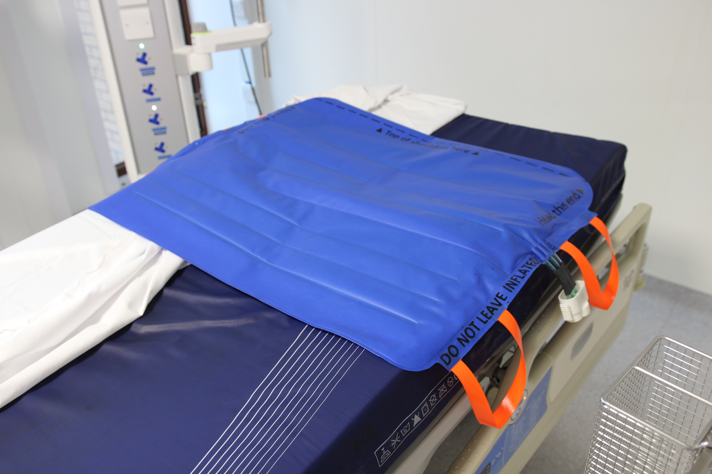
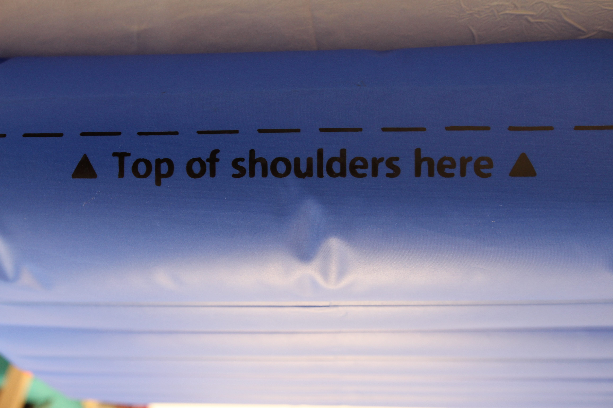
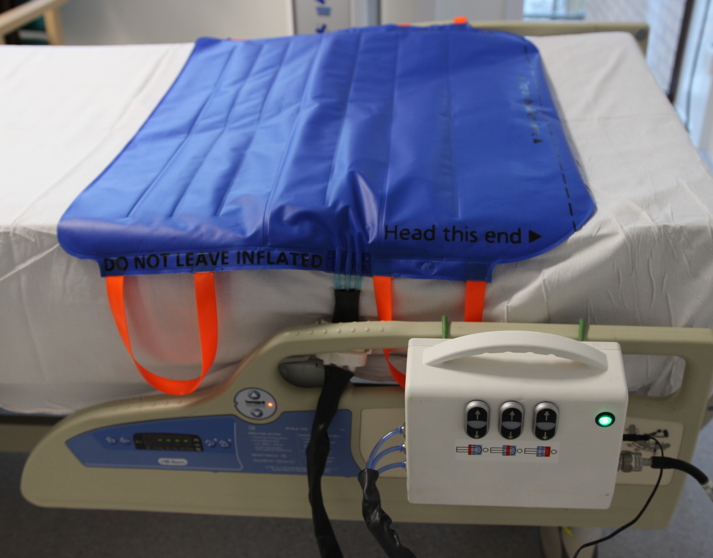
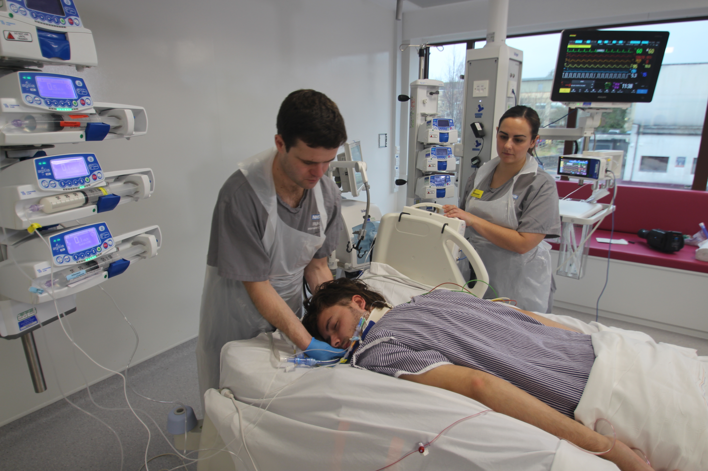
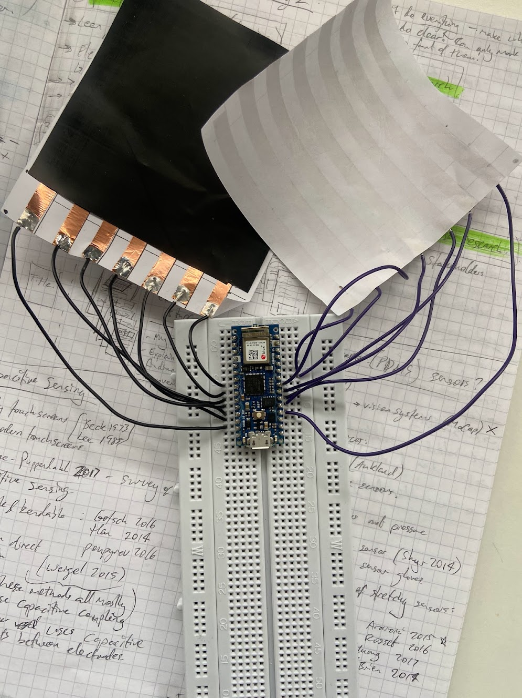
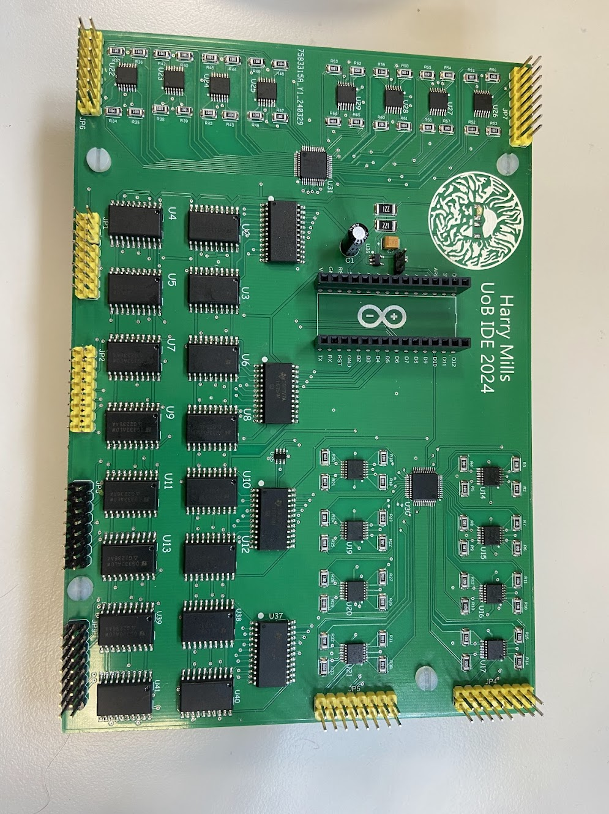

MEDICAL DEVICE DESIGN | YEAR 5 IDE
2024-2025 | GROUP PROJECT
Design and development of an inflatable repositioning aid for prone ICU patients, addressing critical healthcare needs through innovative engineering solutions and user-centered design. The BathMat system reduces manual handling injuries for healthcare workers while improving patient comfort.
The project involved extensive user research with healthcare professionals, iterative prototyping, and testing to create a medical device that meets stringent safety and usability requirements for intensive care environments.
Gallery









